- 通过使用浏览器登录目前支持(Chrome,360极速模式,搜狗极速模式,火狐等现代浏览器)
- 访问链接 类似：http://admin.safintech.com
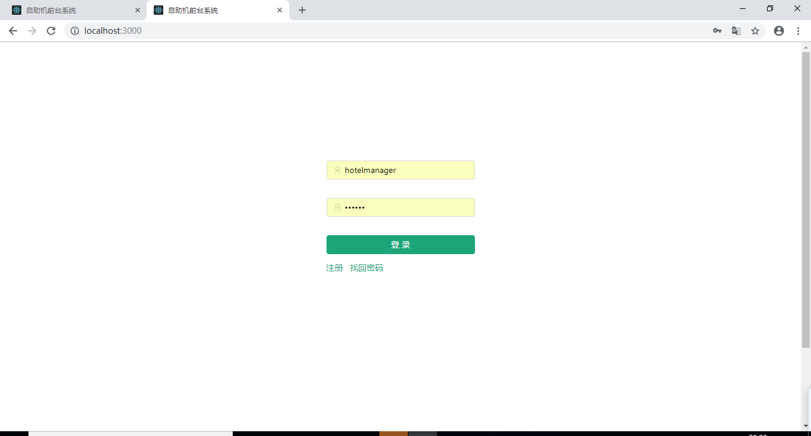
- 首页可以看到当前已经入住的客人的房间,可以双击图标进入订单详情。
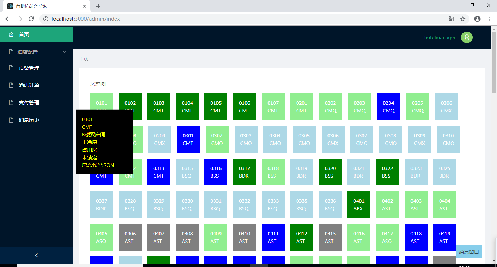
- 客人入住后，客人申请退房后，退款后等都会弹出消息窗口。
- 如果由于刷新过页面消息窗口被清空，可以通过消息历史菜单进行查询。
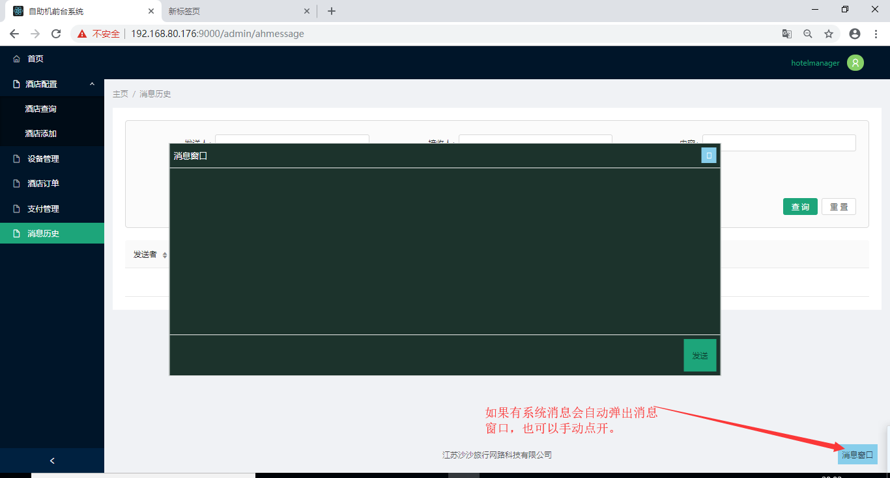 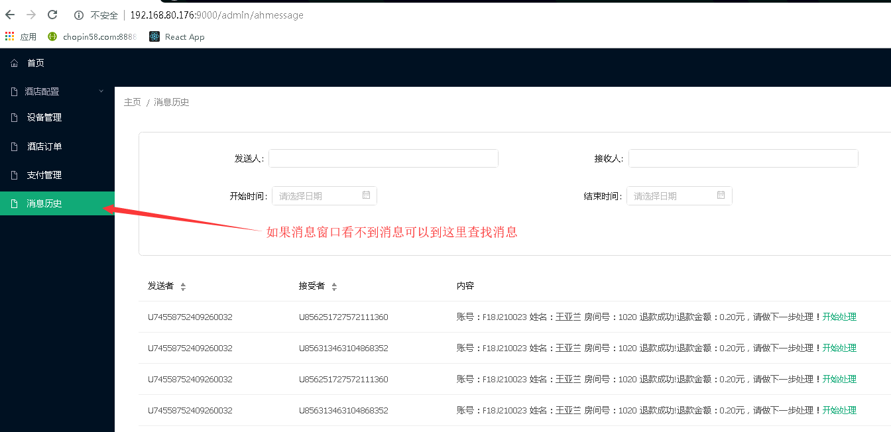
- 客人成功办理入住后进入此列表。
- 如果只能检索自助机办理入住的订单。
- 如果客人在自助机付款了但是没有办理入住（比如出现用户已经入住的情况），可以在支付管理页面通过点击订单编号查询订单。
- 同步按钮的作用是由于酒店管理系统更新过信息但是本系统没有及时刷新的情况。
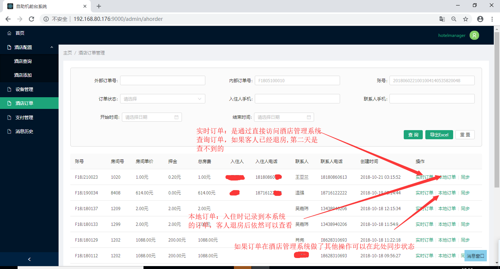
- 如果客人没有离店退房可以通过此按钮查询。如果客人已经离店并且已经过了跨日。只能通过查询本地订单进行退款。注意核对酒店系统的账单和本系统的账单是否一致来进行退款。
- 实时订单和本地订单的退款功能都是一样的。
- 退款成功或者失败后都会弹出消息窗口提示。
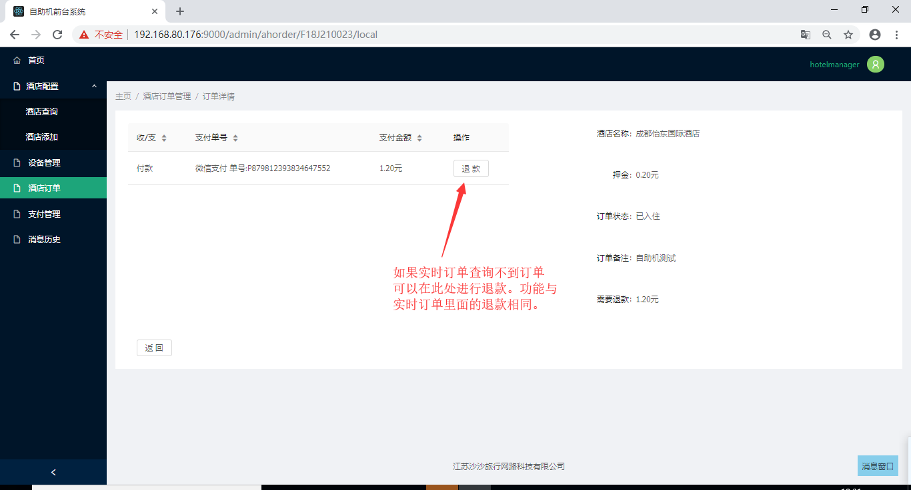 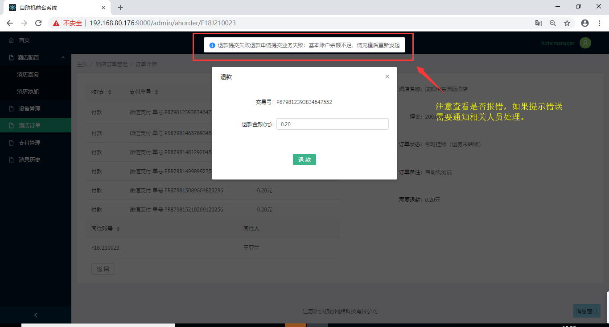
- 此处可以检索到客人在自助机支付的所有交易记录和在前台操作的退款记录。例如:用户办理入住通过微信和支付宝的付款记录，前台人员在订单管理->实时订单或本地订单->退款页面操作的退款。
- 一般情况下不需要使用同步状态按钮。只有在网络长时间中断或者宕机的情况造成支付状态未同步情况下可以手动触发一次同步。
- 可以通过支付平台交易号到支付宝或者微信核对该交易。
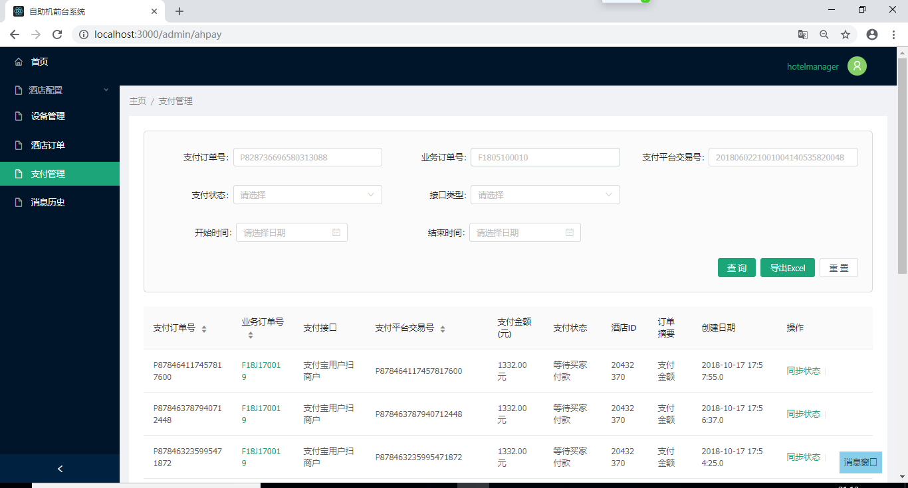 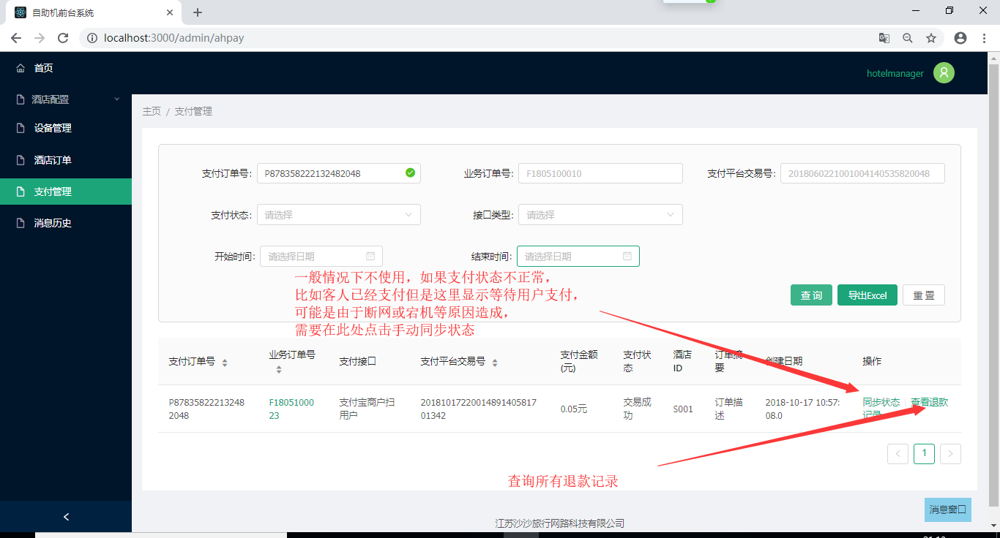
- 有退款记录才会出现查询退款记录按钮，点击后出现退款记录列表。
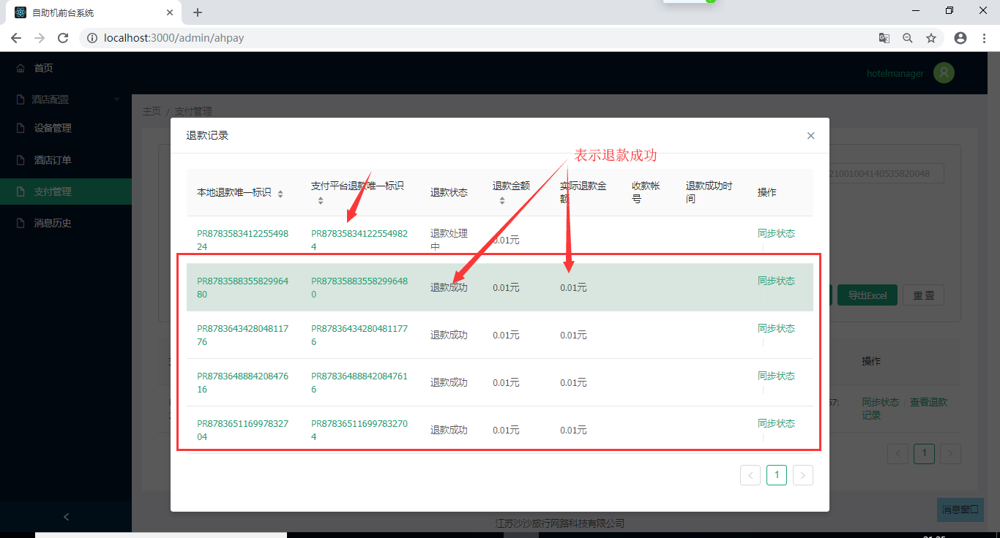
- 可以监测到自助机是否在线，如果自助机运行良好，应该是绿色的状态。如果是灰色的请通知管理员排查问题。
- 由管理员负责操作，前台人员不用关注。
- 自助机的注册时候需要的酒店编号和密码可以到此查询。
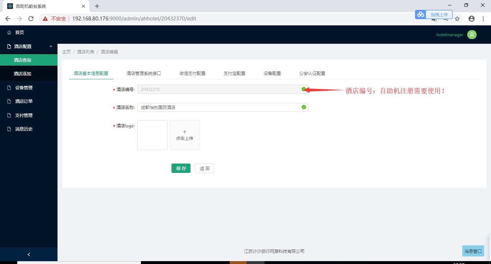
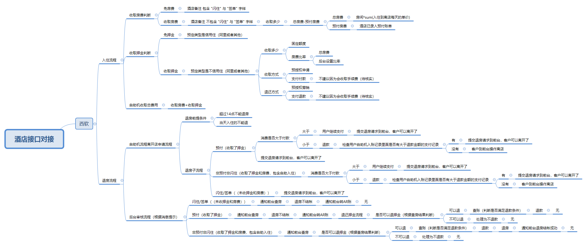